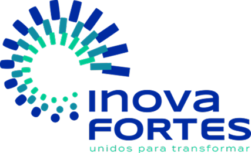
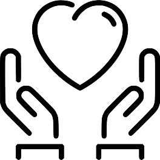

Nosso Projeto Integrado busca otimizar a conexão entre resíduos de ações sociais e pontos de coleta/reciclagem. Diante da falta de um sistema estruturado e do consequente desperdício e impacto ambiental, desenvolvemos uma solução que transforma o que seria descartado em valor para a comunidade e o meio ambiente.
Toda empresa tem uma história. Saber como ela surgiu faz toda a diferença para entender seus valores e suas crenças.
A história da FORTES ENGENHARIA começou em 1º de setembro de 1986, quando os engenheiros Gian Franco Mazzoleni e Ricardo Antônio Arbache Netto fundaram a empresa. Eles sonhavam em empreender na construção civil, valorizar e transformar a vida das pessoas, e trabalhavam com segurança. Atualmente, a FORTES é uma empresa consolidada e referência no setor, conhecida por sua eficiência, competitividade, qualidade na construção de grandes empreendimentos e inovação em soluções tecnológicas.
Na Fortes, fomos impulsionados por um propósito: conectar resíduos gerados em ações sociais a quem pode transformá-los. Percebemos que muitas organizações sociais descartam materiais recicláveis de forma inadequada por falta de um sistema estruturado.
Nossa desafio é otimizar esse logística e integrar instituições, recicladores e cooperativas em uma solução digital. Acreditamos que uma plataforma pode amenizar esse ponto crítico, reduzindo custos e tempo, e criando incentivos para a destinação correta.
Com isso, além de proteger o meio ambiente, aumentar o impacto ambiental positivo de reciclagem e gerar benefícios sociais ao direcionar recursos para reaproveitamento, é nossa forma de engajar organizações sociais na economia circular.
Simplificamos sua jornada de descarte consciente. Se você é uma organização social ou um gerador de resíduos, nossa plataforma intuitiva permite que você organize e visualize facilmente os locais de descarte adequados para o seu tipo de material. De documentos ou recicláveis: tudo é mais intuitivo, inteligente e informatizado. Cuidamos de onde e como destinar seus resíduos de forma sustentável, garantindo que seu esforço social se traduza também em impacto ambiental positivo.
Conectamos você diretamente à fonte de matéria-prima. Nossa solução oferece acesso otimizado a pontos de coleta de resíduos gerados em ações sociais, fornecendo detalhes sobre tipo e quantidade de resíduos disponíveis no seu território. Além de facilitar o fluxo e o tempo da busca por materiais, também garantimos um fluxo constante de insumos qualificados, impulsionando sua operação e contribuindo diretamente para a economia circular e o benefício de diversas instituições sociais.

Email
contato@residuos.br

Telefone
+55 (27) 99925-6083

Linktree
Acesse aqui

Endereço
Av. Maruípe, 2729
Vitória - ES
CEP: 29045-235